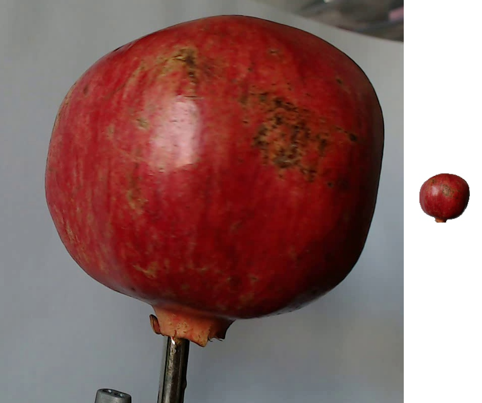
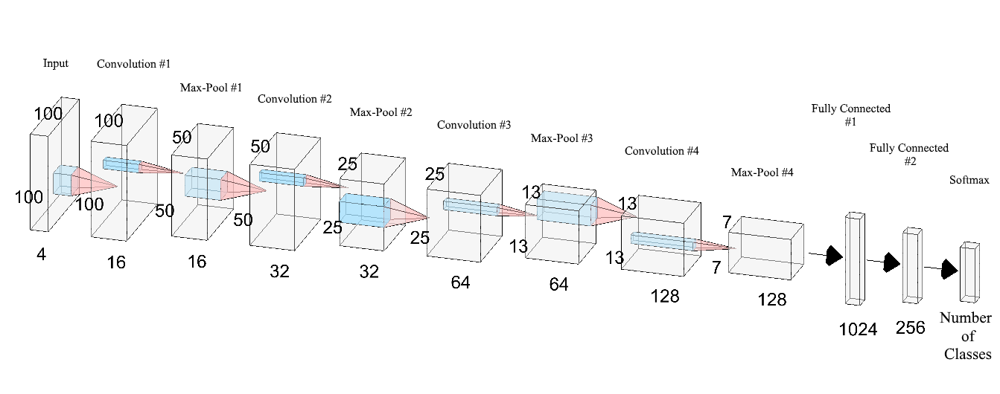
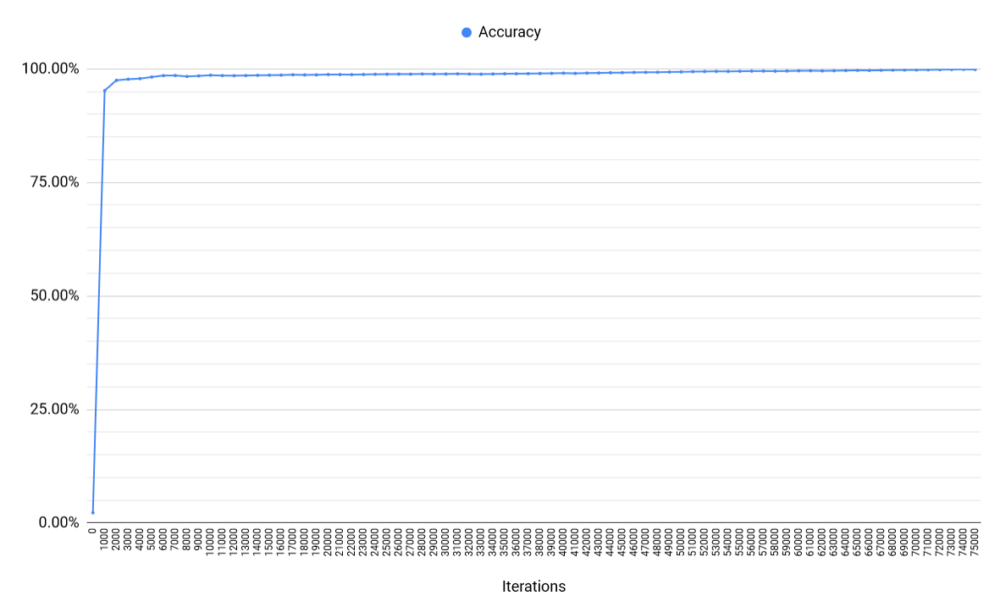

|
Abstract. In this paper we introduce a new, high-quality, dataset of images containing fruits. We also present the results of some numerical experiment for training a neural network to detect fruits. We discuss the reason why we chose to use fruits in this project by proposing a few applications that could use such classifier. Keywords: Deep learning, Object recognition, Computer vision, fruits dataset, image processing |
The aim of this paper is to propose a new dataset of images containing popular fruits. The dataset was named Fruits-360 and can be downloaded from the addresses pointed by references [18] and [19]. Currently (as of 2018.12.22) the set contains 61934 images of 90 fruits and it is constantly updated with images of new fruits as soon as the authors have accesses to them. The reader is encouraged to access the latest version of the dataset from the above indicated addresses.
Having a high-quality dataset is essential for obtaining a good classifier. Most of the existing datasets with images (see for instance the popular CIFAR dataset [12]) contain both the object and the noisy background. This could lead to cases where changing the background will lead to the incorrect classification of the object.
As a second objective we have trained a deep neural network that is capable of identifying fruits from images. This is part of a more complex project that has the target of obtaining a classifier that can identify a much wider array of objects from images. This fits the current trend of companies working in the augmented reality field. During its annual I/O conference, Google announced [21] that is working on an application named Google Lens which will tell the user many useful information about the object toward which the phone camera is pointing. First step in creating such application is to correctly identify the objects. The software has been released later in 2017 as a feature of Google Assistant and Google Photos apps. Currently the identification of objects is based on a deep neural network [35].
Such a network would have numerous applications across multiple domains like autonomous navigation, modeling objects, controlling processes or human-robot interactions. The area we are most interested in is creating an autonomous robot that can perform more complex tasks than a regular industrial robot. An example of this is a robot that can perform inspections on the aisles of stores in order to identify out of place items or understocked shelves. Furthermore, this robot could be enhanced to be able to interact with the products so that it can solve the problems on its own. Another area in which this research can provide benefits is autonomous fruit harvesting. While there are several papers on this topic already, from the best of our knowledge, they focus on few species of fruits or vegetables. In this paper we attempt to create a network that can classify a variety of species of fruit, thus making it useful in many more scenarios.
As the start of this project we chose the task of identifying fruits for several reasons. On one side, fruits have certain categories that are hard to differentiate, like the citrus genus, that contains oranges and grapefruits. Thus we want to see how well can an artificial intelligence complete the task of classifying them. Another reason is that fruits are very often found in stores, so they serve as a good starting point for the previously mentioned project.
The paper is structured as follows: in the first part we will shortly discuss a few outstanding achievements obtained using deep learning for fruits recognition, followed by a presentation of the concept of deep learning. In the second part we describe the Fruits-360 dataset: how it was created and what it contains. In the third part we will present the framework used in this project - TensorFlow[32] and the reasons we chose it. Following the framework presentation, we will detail the structure of the neural network that we used. We also describe the training and testing data used as well as the obtained performance. Finally, we will conclude with a few plans on how to improve the results of this project. Source code is listed in the Appendix.
In this section we review several previous attempts to use neural networks and deep learning for fruits recognition.
A method for recognizing and counting fruits from images in cluttered greenhouses is presented in [28]. The targeted plants are peppers with fruits of complex shapes and varying colors similar to the plant canopy. The aim of the application is to locate and count green and red pepper fruits on large, dense pepper plants growing in a greenhouse. The training and validation data used in this paper consists of 28000 images of over 1000 plants and their fruits. The used method to locate and count the peppers is two-step: in the first step, the fruits are located in a single image and in a second step multiple views are combined to increase the detection rate of the fruits. The approach to find the pepper fruits in a single image is based on a combination of (1) finding points of interest, (2) applying a complex high-dimensional feature descriptor of a patch around the point of interest and (3) using a so-called bag-of-words for classifying the patch.
Paper [25] presents a novel approach for detecting fruits from images using deep neural networks. For this purpose the authors adapt a Faster Region-based convolutional network. The objective is to create a neural network that would be used by autonomous robots that can harvest fruits. The network is trained using RGB and NIR (near infra red) images. The combination of the RGB and NIR models is done in 2 separate cases: early and late fusion. Early fusion implies that the input layer has 4 channels: 3 for the RGB image and one for the NIR image. Late fusion uses 2 independently trained models that are merged by obtaining predictions from both models and averaging the results. The result is a multi modal network which obtains much better performance than the existing networks.
On the topic of autonomous robots used for harvesting, paper [1] shows a network trained to recognize fruits in an orchard. This is a particularly difficult task because in order to optimize operations, images that span many fruit trees must be used. In such images, the amount of fruits can be large, in the case of almonds up to 1500 fruits per image. Also, because the images are taken outside, there is a lot of variance in luminosity, fruit size, clustering and view point. Like in paper [25], this project makes use of the Faster Region-based convolutional network, which is presented in a detailed view in paper [24]. Related to the automatic harvest of fruits, article [22] presents a method of detecting ripe strawberries and apples from orchards. The paper also highlights existing methods and their performance.
In [11] the authors compile a list of the available state of the art methods for harvesting with the aid of robots. They also analyze the method and propose ways to improve them.
In [2] one can see a method of generating synthetic images that are highly similar to empirical images. Specifically, this paper introduces a method for the generation of large-scale semantic segmentation datasets on a plant-part level of realistic agriculture scenes, including automated per-pixel class and depth labeling. One purpose of such synthetic dataset would be to bootstrap or pre-train computer vision models, which are fine-tuned thereafter on a smaller empirical image dataset. Similarly, in paper [23] we can see a network trained on synthetic images that can count the number of fruits in images without actually detecting where they are in the image.
Another paper, [4], uses two back propagation neural networks trained on images with apple ”Gala” variety trees in order to predict the yield for the upcoming season. For this task, four features have been extracted from images: total cross-sectional area of fruits, fruit number, total cross-section area of small fruits, and cross-sectional area of foliage.
Paper [10] presents an analysis of fruit detectability in relation to the angle of the camera when the image was taken. Based on this research, it was concluded that the fruit detectability was the highest on front views and looking with a zenith angle of 60∘ upwards.
In papers [27, 37, 15] we can see an approach to detecting fruits based on color, shape and texture. They highlight the difficulty of correctly classifying similar fruits of different species. They propose combining existing methods using the texture, shape and color of fruits to detect regions of interest from images. Similarly, in [20] a method combining shape, size and color, texture of the fruits together with a k nearest neighbor algorithm is used to increase the accuracy of recognition.
One of the most recent works [36] presents an algorithm based on the improved Chan–Vese level-set model [3] and combined with the level-set idea and M-S mode [17]. The proposed goal was to conduct night-time green grape detection. Combining the principle of the minimum circumscribed rectangle of fruit and the method of Hough straight-line detection, the picking point of the fruit stem was calculated.
In the area of image recognition and classification, the most successful results were obtained using artificial neural networks [6, 30]. These networks form the basis for most deep learning models.
Deep learning is a class of machine learning algorithms that use multiple layers that contain nonlinear processing units [26]. Each level learns to transform its input data into a slightly more abstract and composite representation [6]. Deep neural networks have managed to outperform other machine learning algorithms. They also achieved the first superhuman pattern recognition in certain domains [5]. This is further reinforced by the fact that deep learning is considered as an important step towards obtaining Strong AI. Secondly, deep neural networks - specifically convolutional neural networks - have been proved to obtain great results in the field of image recognition.
In the rest of this section we will briefly describe some models of deep artificial neural networks along with some results for some related problems.
Convolutional neural networks (CNN) are part of the deep learning models. Such a network can be composed of convolutional layers, pooling layers, ReLU layers, fully connected layers and loss layers [34]. In a typical CNN architecture, each convolutional layer is followed by a Rectified Linear Unit (ReLU) layer, then a Pooling layer then one or more convolutional layer and finally one or more fully connected layer. A characteristic that sets apart the CNN from a regular neural network is taking into account the structure of the images while processing them. Note that a regular neural network converts the input in a one dimensional array which makes the trained classifier less sensitive to positional changes.
Among the best results obtained on the MNIST [13] dataset is done by using multi-column deep neural networks. As described in paper [7], they use multiple maps per layer with many layers of non-linear neurons. Even if the complexity of such networks makes them harder to train, by using graphical processors and special code written for them. The structure of the network uses winner-take-all neurons with max pooling that determine the winner neurons.
Another paper [16] further reinforces the idea that convolutional networks have obtained better accuracy in the domain of computer vision. In paper [29] an all convolutional network that gains very good performance on CIFAR-10 [12] is described in detail. The paper proposes the replacement of pooling and fully connected layers with equivalent convolutional ones. This may increase the number of parameters and adds inter-feature dependencies however it can be mitigated by using smaller convolutional layers within the network and acts as a form of regularization.
In what follows we will describe each of the layers of a CNN network.
Convolutional layers are named after the convolution operation. In mathematics convolution is an operation on two functions that produces a third function that is the modified (convoluted) version of one of the original functions. The resulting function gives in integral of the pointwise multiplication of the two functions as a function of the amount that one of the original functions is translated [33].
A convolutional layer consists of groups of neurons that make up kernels. The kernels have a small size but they always have the same depth as the input. The neurons from a kernel are connected to a small region of the input, called the receptive field, because it is highly inefficient to link all neurons to all previous outputs in the case of inputs of high dimensions such as images. For example, a 100 x 100 image has 10000 pixels and if the first layer has 100 neurons, it would result in 1000000 parameters. Instead of each neuron having weights for the full dimension of the input, a neuron holds weights for the dimension of the kernel input. The kernels slide across the width and height of the input, extract high level features and produce a 2 dimensional activation map. The stride at which a kernel slides is given as a parameter. The output of a convolutional layer is made by stacking the resulted activation maps which in turned is used to define the input of the next layer.
Applying a convolutional layer over an image of size 32 X 32 results in an activation map of size 28 X 28. If we apply more convolutional layers, the size will be further reduced, and, as a result the image size is drastically reduced which produces loss of information and the vanishing gradient problem. To correct this, we use padding. Padding increases the size of a input data by filling constants around input data. In most of the cases, this constant is zero so the operation is named zero padding. ”Same” padding means that the output feature map has the same spatial dimensions as the input feature map. This tries to pad evenly left and right, but if the number of columns to be added is odd, it will add an extra column to the right. ”Valid” padding is equivalent to no padding.
The strides causes a kernel to skip over pixels in an image and not include them in the output. The strides determines how a convolution operation works with a kernel when a larger image and more complex kernel are used. As a kernel is sliding the input, it is using the strides parameter to determine how many positions to skip.
ReLU layer, or Rectified Linear Units layer, applies the activation function max(0, x). It does not reduce the size of the network, but it increases its nonlinear properties.
Pooling layers are used on one hand to reduce the spatial dimensions of the representation and to reduce the amount of computation done in the network. The other use of pooling layers is to control overfitting. The most used pooling layer has filters of size 2 x 2 with a stride 2. This effectively reduces the input to a quarter of its original size.
Fully connected layers are layers from a regular neural network. Each neuron from a fully connected layer is linked to each output of the previous layer. The operations behind a convolutional layer are the same as in a fully connected layer. Thus, it is possible to convert between the two.
Loss layers are used to penalize the network for deviating from the expected output. This is normally the last layer of the network. Various loss function exist: softmax is used for predicting a class from multiple disjunct classes, sigmoid cross-entropy is used for predicting multiple independent probabilities (from the [0, 1] interval).
Another deep learning algorithm is the recursive neural network [16]. The paper proposes an improvement to the popular convolutional network in the form of a recurrent convolutional network. In this kind of architecture the same set of weights is recursively applied over some data. Traditionally, recurrent networks have been used to process sequential data, handwriting or speech recognition being the most known examples. By using recurrent convolutional layers with some max pool layers in between them and a final global max pool layer at the end several advantages are obtained. Firstly, within a layer, every unit takes into account the state of units in an increasingly larger area around it. Secondly, by having recurrent layers, the depth of the network is increased without adding more parameters. Recurrent networks have shown good results in natural language processing.
Yet another model that is part of the deep learning algorithms is the deep belief network [14]. A deep belief network is a probabilistic model composed by multiple layers of hidden units. The usages of a deep belief network are the same as the other presented networks but can also be used to pre-train a deep neural network in order to improve the initial values of the weights. This process is important because it can improve the quality of the network and can reduce training times. Deep belief networks can be combined with convolutional ones in order to obtain convolutional deep belief networks which exploit the advantages offered by both types of architectures.
In this section we describe how the data set was created and what it contains.
The images were obtained by filming the fruits while they are rotated by a motor and then extracting frames.
Fruits were planted in the shaft of a low speed motor (3 rpm) and a short movie of 20 seconds was recorded. Behind the fruits we placed a white sheet of paper as background.

However due to the variations in the lighting conditions, the background was not uniform and we wrote a dedicated algorithm which extract the fruit from the background. This algorithm is of flood fill type: we start from each edge of the image and we mark all pixels there, then we mark all pixels found in the neighborhood of the already marked pixels for which the distance between colors is less than a prescribed value. we repeat the previous step until no more pixels can be marked.
All marked pixels are considered as being background (which is then filled with white) and the rest of pixels are considered as belonging to the object. The maximum value for the distance between 2 neighbor pixels is a parameter of the algorithm and is set (by trial and error) for each movie.
Fruits were scaled to fit a 100x100 pixels image. Other datasets (like MNIST) use 28x28 images, but we feel that small size is detrimental when you have too similar objects (a red cherry looks very similar to a red apple in small images). Our future plan is to work with even larger images, but this will require much more longer training times.
To understand the complexity of background-removal process we have depicted in Figure 1 a fruit with its original background and after the background was removed and the fruit was scaled down to 100 x 100 pixels.
The resulted dataset has 61934 images of fruits spread across 90 labels. The data set is available on GitHub [18] and Kaggle [19]. The labels and the number of images for training are given in Table 1.
For the purpose of implementing, training and testing the network described in this paper we used the TensorFlow library [32]. This is an open source framework for machine learning created by Google for numerical computation using data flow graphs. Nodes in the graph represent mathematical operations, while the graph edges represent the multidimensional data arrays called tensors.
The main components in a TensorFlow system are the client, which uses the Session interface to communicate with the master, and one or more worker processes, with each worker process responsible for arbitrating access to one or more computational devices (such as CPU cores or GPU cards) and for executing graph nodes on those devices as instructed by the master.
TensorFlow offers some powerful features such as: it allows computation mapping to multiple machines, unlike most other similar frameworks; it has built in support for automatic gradient computation; it can partially execute subgraphs of the entire graph and it can add constraints to devices, like placing nodes on devices of a certain type, ensure that two or more objects are placed in the same space etc.
TensorFlow is used in several projects, such as the Inception Image Classification Model [31]. This project introduced a state of the art network for classification and detection in the ImageNet Large-Scale Visual Recognition Challenge 2014. In this project the usage of the computing resources is improved by adjusting the network width and depth while keeping the computational budget constant[31].
Another project that employs the TensorFlow framework is DeepSpeech, developed by Mozilla. It is an open source Speech-To-Text engine based on Baidu’s Deep Speech architecture [9]. The architecture is a state of the art recognition system developed using end-to-end deep learning. It is simpler that other architectures and does not need hand designed components for background noise, reverberation or speaker variation.
We will present the most important utilized methods and data types from TensorFlow together with a short description for each of them.
A convolutional layer is defined like this:
Computes a 2-D convolution given 4-D input and filter tensors. Given an input tensor of shape [batch, in_height, in_width, in_channels] and a kernel tensor of shape [filter_height, filter_width, in_channels, out_channels], this op performs the following:
Performs the max pooling operation on the input. The ksize and strides parameters can be tuples or lists of tuples of 4 elements. Ksize represents the size of the window for each dimension of the input tensor and strides represents the stride of the sliding window for each dimension of the input tensor. The padding parameter can be ‘’VALID’‘ or ‘’SAME’‘.
Computes the rectified linear operation - max(features, 0). Features is a tensor.
Applies dropout on input x with probability keep_prob. This means that for each value in x the method outputs the value scaled by 1 / keep_prob with probability keep_prob or 0. The scaling is done on order to preserve the sum of the elements. The noise_shape parameter defines which groups of values are kept or dropped together. For example, a value of [k, 1, 1, n] for the noise_shape, with x having the shape [k, l, m, n], means that each row and column will be kept or dropped together, while the batch and channel components will be kept or dropped separately.
For this project we used a convolutional neural network. As previously described this type of network makes use of convolutional layers, pooling layers, ReLU layers, fully connected layers and loss layers. In a typical CNN architecture, each convolutional layer is followed by a Rectified Linear Unit (ReLU) layer, then a Pooling layer then one or more convolutional layer and finally one or more fully connected layer.
Note again that a characteristic that sets apart the CNN from a regular neural network is taking into account the structure of the images while processing them. A regular neural network converts the input in a one dimensional array which makes the trained classifier less sensitive to positional changes.
The input that we used consists of standard RGB images of size 100 x 100 pixels.
The neural network that we used in this project has the structure given in Table 2.

A visual representation of the neural network used is given in Figure 2.
We present a short scheme containing the flow of the the training process:
The dataset was split in 2 parts: training set - which consists of 46371 images of fruits and testing set - which is made of 15563 images.
The data was bundled into a TFRecords file (specific to TensorFlow). This is a binary file that contains protocol buffers with a feature map. In this map it is possible to store information such as the image height, width, depth and even the raw image. Using these files we can create queues in order to feed the data to the neural network.
By calling the method shuffle_batch we provide randomized input to the network. The way we used this method was providing it example tensors for images and labels and it returned tensors of shape batch size x image dimensions and batch size x labels. This helps greatly lower the chance of using the same batch multiple times for training, which in turn improves the quality of the network.
We ran multiple scenarios in which the neural network was trained using different levels of data augmentation and preprocessing:
For each scenario we used the previously described neural network which was trained over 75000 iterations with batches of 60 images selected at random from the training set. Every 50 steps we calculated the accuracy using cross-validation. For testing we ran the trained network on the test set. The results for each case are presented in Table 3.
As reflected in Table 3 the best results were obtained by applying data augmentation and converting the RGB images to the HSV colorspace to which the grayscale representation was added. This is intuitive since in this scenario we attach the most amount of information to the input, thus the network can learn multiple features in order to classify the images.
It is also important to notice that training the grayscale images only yielded the best results on the train set but very weak results on the test set. We investigated this problem and we have discovered that a lot of images containing apples are incorrectly classified on the test set. In order to further investigate the issue we ran a round of training and testing on just the apple classes of images. The results were similar, with high accuracy on the train data, but low accuracy on the test data. We attribute this to overfitting, because the grayscale images lose too many features, the network does not learn properly how to classify the images.
In order to determine the best network configuration for classifying the images in out dataset, we took multiple configurations, used the train set to train them and then calculated their accuracy on the test and training set. In Table 4 we present the results.
From Table 4 we can see that the best performance on the test set was obtained by configuration nr. 1, however, this configuration did not obtain the best accuracy on the training set. Configurations 5 and 3 obtained the best accuracy on the train set (99.95%), but the performance on the test set lagged behind a bit. For configuration 3 this phenomenon is much more pronounced, as the difference between train and test accuracies is 4.52%. Similarly, configuration 8 has a big difference in performance between the train and test sets. This is a result of the model overfitting to the training data and not properly generalizing to other images. The second best performance on the train set was obtained by configuration 9, which also obtained the second best accuracy on the test set.
The evolution of accuracy during training is given in Figure 3. It can be seen that the training rapidly improves in the first 1000 iterations (accuracy becomes greater than 90%) and then it is very slowly improved in the next 74000 iterations.

Some of the incorrectly classified images are given in Table 5.
We described a new and complex database of images with fruits. Also we made some numerical experiments by using TensorFlow library in order to classify the images according to their content.
From our point of view one of the main objectives for the future is to improve the accuracy of the neural network. This involves further experimenting with the structure of the network. Various tweaks and changes to any layers as well as the introduction of new layers can provide completely different results. Another option is to replace all layers with convolutional layers. This has been shown to provide some improvement over the networks that have fully connected layers in their structure. A consequence of replacing all layers with convolutional ones is that there will be an increase in the number of parameters for the network [29]. Another possibility is to replace the rectified linear units with exponential linear units. According to paper [8], this reduces computational complexity and add significantly better generalization performance than rectified linear units on networks with more that 5 layers. We would like to try out these practices and also to try to find new configurations that provide interesting results.
In the near future we plan to create a mobile application which takes pictures of fruits and labels them accordingly.
Another objective is to expand the data set to include more fruits. This is a more time consuming process since we want to include items that were not used in most others related papers.
A preliminary version of this dataset with 25 fruits was presented during the Students Communication Session from Babeş-Bolyai University, June 2017.
In this section we present the source code and project structure used in the numerical experiment described in this paper. The source code can be downloaded from GitHub [18].
The source code is organized (on GitHub [18]) as follows:
root_directory
__
fruit_detection
__
detect_fruits.py
__
network
__
fruit_test_net.py
__
fruit_train_net.py
__
network_structure
__
fruit_network.py
__
utils.py
__
utils
__
build_image_data.py
__
constants.py
__
freeze_graph.py
__
labels
In order to run the project from the command line, first make sure the PYTHONPATH system variable contains the path to the root_directory. Ensure that the utils/constants.py contains the proper paths.
Run the utils/build_image_data.py to generate the tfrecord files with training
and test data. This script is provided in the tensorFlow library. The file
contains several default values for the flags. They can be changed in the
code directly or different values can be provided from the command
line:
python utils/build_image_data.py [flags]
where flags can be:
After the train and test data has been serialized, the train and test scripts can
be run:
python network/fruit_train_net.py
python network/fruit_test_net.py
After the training has completed, the python utils/build_image_data.py [flags]
script can be run:
python utils/build_image_data.py –image_path=”path to a jpeg file”
Finally, the utils/freeze_graph.py script, which is also provided as a utility script in tensorFlow, creates a single file with the trained model data.
python freeze_graph flags
These flags are mandatory:
In the following, we will provide explanations for the code. We will begin with the definition of the general parameters and configurations of the project.
The following are defined in the utils/constants.py file:
All these configurations can be changed to suit the setup of anyone using the code.
In the network_structure/utils.py file we have helper methods used across the project:
Here we also define methods to perform data augmentation on the input images. Data augmentation is a good way to reduce overfitting on models.
Flipping the image horizontally and vertically helps prevent the use the orientation of the fruit as a feature when training. This should result in fruits being correctly classified regardless of their position in an image.
Following, in the network_structure/fruit_network.py file we have network parameters and the method that defines the network structure.
The following 2 files, network/fruit_test_net.py, network/fruit_train_net.py contain the logic for training and testing the network Firstly, in network/fruit_train_net.py we have:
Secondly, in network/fruit_test_net.py we have:
Finally, we have the fruit_detection/detect_fruits.py. This serves as a basic example on how to read an image from a file, resize it and feed it through a trained model. The script prints the class that had the highest probability after passing it through the model.
[1] BARGOTI, S., AND UNDERWOOD, J. Deep fruit detection in orchards. In 2017 IEEE International Conference on Robotics and Automation (ICRA) (May 2017), pp. 3626–3633. ⇒
[2] BARTH, R., IJSSELMUIDEN, J., HEMMING, J., AND HENTEN, E. V. Data synthesis methods for semantic segmentation in agriculture: A capsicum annuum dataset. Computers and Electronics in Agriculture 144 (2018), 284 – 296. ⇒
[3] CHAN, T. F., AND VESE, L. A. Active contours without edges. IEEE Transactions on Image Processing 10, 2 (Feb 2001), 266–277. ⇒
[4] CHENG, H., DAMEROW, L., SUN, Y., AND BLANKE, M. Early yield prediction using image analysis of apple fruit and tree canopy features with neural networks. Journal of Imaging 3, 1 (2017). ⇒
[5] CIREşAN, D. C., GIUSTI, A., GAMBARDELLA, L. M., AND SCHMIDHUBER, J. Deep neural networks segment neuronal membranes in electron microscopy images. In Proceedings of the 25th International Conference on Neural Information Processing Systems - Volume 2 (USA, 2012), NIPS’12, Curran Associates Inc., pp. 2843–2851. ⇒
[6] CIREşAN, D. C., MEIER, U., MASCI, J., GAMBARDELLA, L. M., AND SCHMIDHUBER, J. Flexible, high performance convolutional neural networks for image classification. In Proceedings of the Twenty-Second International Joint Conference on Artificial Intelligence - Volume Volume Two (2011), IJCAI’11, AAAI Press, pp. 1237–1242. ⇒
[7] CIRESAN, D. C., MEIER, U., AND SCHMIDHUBER, J. Multi-column deep neural networks for image classification. CoRR abs/1202.2745 (2012). ⇒
[8] CLEVERT, D., UNTERTHINER, T., AND HOCHREITER, S. Fast and accurate deep network learning by exponential linear units (elus). CoRR abs/1511.07289 (2015). ⇒
[9] HANNUN, A. Y., CASE, C., CASPER, J., CATANZARO, B., DIAMOS, G., ELSEN, E., PRENGER, R., SATHEESH, S., SENGUPTA, S., COATES, A., AND NG, A. Y. Deep speech: Scaling up end-to-end speech recognition. CoRR abs/1412.5567 (2014). ⇒
[10] HEMMING, J., RUIZENDAAL, J., HOFSTEE, J. W., AND VAN HENTEN, E. J. Fruit detectability analysis for different camera positions in sweet-pepper. Sensors 14, 4 (2014), 6032–6044. ⇒
[11] KAPACH, K., BARNEA, E., MAIRON, R., EDAN, Y., AND BEN-SHAHAR, O. Computer vision for fruit harvesting robots – state of the art and challenges ahead. Int. J. Comput. Vision Robot. 3, 1/2 (Apr. 2012), 4–34. ⇒
[12] KRIZHEVSKY, A., NAIR, V., AND HINTON, G. The cifar dataset. [Online; accessed 27.10.2018]. ⇒
[13] LECUN, Y., CORTES, C., AND BURGES, C. J. The mnist database of handwritten digits. [Online; accessed 27.10.2018]. ⇒
[14] LEE, H., GROSSE, R., RANGANATH, R., AND NG, A. Y. Convolutional deep belief networks for scalable unsupervised learning of hierarchical representations. In Proceedings of the 26th Annual International Conference on Machine Learning (New York, NY, USA, 2009), ICML ’09, ACM, pp. 609–616. ⇒
[15] LI, D., ZHAO, H., ZHAO, X., GAO, Q., AND XU, L. Cucumber detection based on texture and color in greenhouse. International Journal of Pattern Recognition and Artificial Intelligence 31 (01 2017). ⇒
[16] LIANG, M., AND HU, X. Recurrent convolutional neural network for object recognition. In 2015 IEEE Conference on Computer Vision and Pattern Recognition (CVPR) (June 2015), pp. 3367–3375. ⇒
[17] MUMFORD, D., AND SHAH, J. Optimal approximations by piecewise smooth functions and associated variational problems. Communications on Pure and Applied Mathematics 42, 5 (1989), 577–685. ⇒
[18] MURESAN, H., AND OLTEAN, M. Fruits 360 dataset on github. [Online; accessed 27.10.2018]. ⇒
[19] MURESAN, H., AND OLTEAN, M. Fruits 360 dataset on kaggle. [Online; accessed 27.10.2018]. ⇒
[20] NINAWE, P., AND PANDEY, M. S. A completion on fruit recognition system using k-nearest neighbors algorithm. In International Journal of Advanced Research in Computer Engineering & Technology (IJARCET) (2014), vol. 3. ⇒
[21] O’BOYLE, B., AND HALL, C. What is google lens and how do you use it? [Online; accessed 05.05.2018]. ⇒
[22] PUTTEMANS, S., VANBRABANT, Y., TITS, L., AND GOEDEM�, T. Automated visual fruit detection for harvest estimation and robotic harvesting. In 2016 Sixth International Conference on Image Processing Theory, Tools and Applications (IPTA) (Dec 2016), pp. 1–6. ⇒
[23] RAHNEMOONFAR, M., AND SHEPPARD, C. Deep count: Fruit counting based on deep simulated learning. Sensors 17, 4 (2017). ⇒
[24] REN, S., HE, K., GIRSHICK, R. B., AND SUN, J. Faster R-CNN: towards real-time object detection with region proposal networks. CoRR abs/1506.01497 (2015). ⇒
[25] SA, I., GE, Z., DAYOUB, F., UPCROFT, B., PEREZ, T., AND MCCOOL, C. Deepfruits: A fruit detection system using deep neural networks. Sensors 16, 8 (2016). ⇒
[26] SCHMIDHUBER, J. Deep learning in neural networks: An overview. CoRR abs/1404.7828 (2014). ⇒
[27] SELVARAJ, A., SHEBIAH, N., NIDHYANANTHAN, S., AND GANESAN, L. Fruit recognition using color and texture features. Journal of Emerging Trends in Computing and Information Sciences 1 (10 2010), 90–94. ⇒
[28] SONG, Y., GLASBEY, C., HORGAN, G., POLDER, G., DIELEMAN, J., AND VAN DER HEIJDEN, G. Automatic fruit recognition and counting from multiple images. Biosystems Engineering 118 (2014), 203 – 215. ⇒
[29] SPRINGENBERG, J. T., DOSOVITSKIY, A., BROX, T., AND RIEDMILLER, M. A. Striving for simplicity: The all convolutional net. CoRR abs/1412.6806 (2014). ⇒
[30] SRIVASTAVA, R. K., GREFF, K., AND SCHMIDHUBER, J. Training very deep networks. CoRR abs/1507.06228 (2015). ⇒
[31] SZEGEDY, C., LIU, W., JIA, Y., SERMANET, P., REED, S. E., ANGUELOV, D., ERHAN, D., VANHOUCKE, V., AND RABINOVICH, A. Going deeper with convolutions. CoRR abs/1409.4842 (2014). ⇒
[32] TENSORFLOW. Tensorflow. [Online; accessed 05.05.2018]. ⇒
[33] WIKIPEDIA. Convolution in mathematics. [Online; accessed 05.05.2018]. ⇒
[34] WIKIPEDIA. Deep learning article on wikipedia. [Online; accessed 05.05.2018]. ⇒
[35] WIKIPEDIA. Google lens on wikipedia. [Online; accessed 05.05.2018]. ⇒
[36] XIONG, J., LIU, Z., LIN, R., BU, R., HE, Z., YANG, Z., AND LIANG, C. Green grape detection and picking-point calculation in a night-time natural environment using a charge-coupled device (ccd) vision sensor with artificial illumination. Sensors 18, 4 (2018). ⇒
[37] ZAWBAA, H., ABBASS, M., HAZMAN, M., AND HASSANIEN, A. E. Automatic fruit image recognition system based on shape and color features. Communications in Computer and Information Science 488 (11 2014), 278–290. ⇒